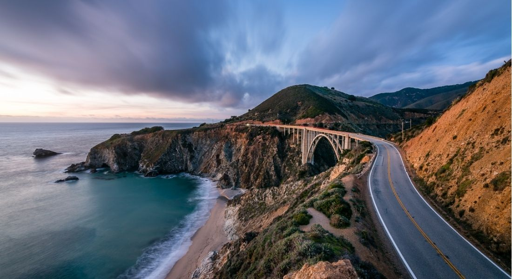
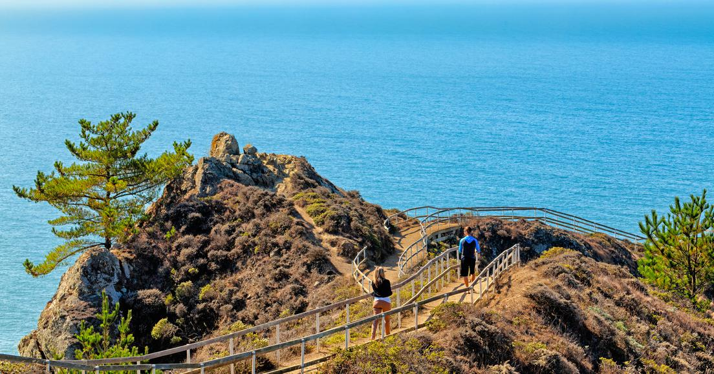
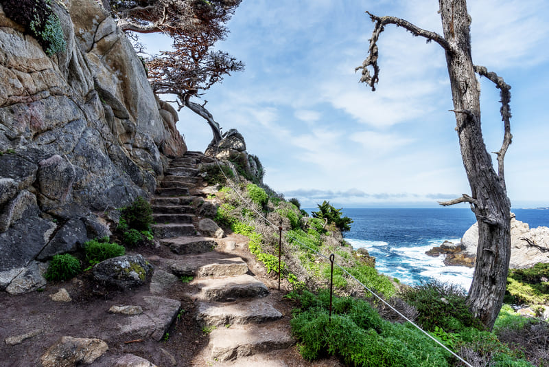
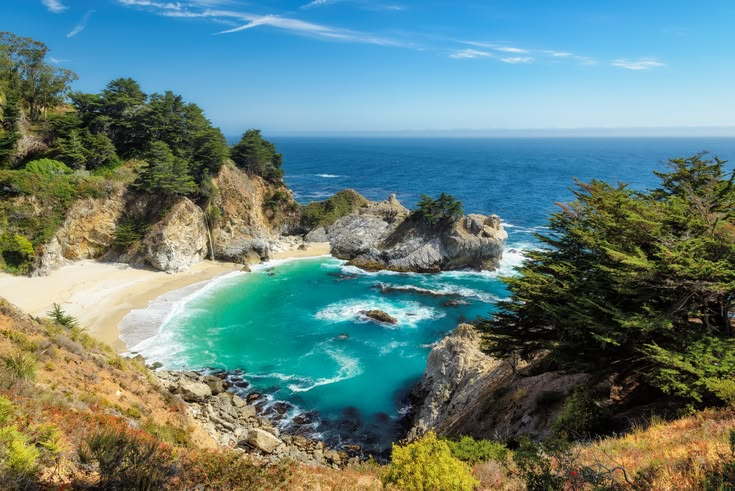

Highway 1 Is Back: Your Perfect Big Sur Day
Highway 1 through Big Sur is open again. After years of disruptions — most recently the extended closure following the Mud Creek slide that deposited millions of tons of earth onto a half-mile stretch of road south of Gorda — the highway is fully navigable from Carmel all the way to San Simeon in a single continuous drive. For anyone who has been waiting to make the trip, or who remembers doing it before the closures and wants to experience it again, now is the time. The road has not changed in any fundamental way: it is still narrow, still cliffside, still the kind of drive that demands your full attention and rewards it completely.
The best approach is to start early from Carmel or Monterey and move south at a pace that allows for stops. The first major landmark is Bixby Creek Bridge, about thirteen miles south of Carmel, where a pullout on the north side of the bridge gives access to a short bluff trail above the canyon. Plan twenty minutes here at minimum; if the light is good, you will stay longer. The surrounding trail follows the cliff edge with views down to the beach at the mouth of Bixby Creek, and on a clear morning the entire Big Sur coastline opens up to the south in a way that sets the tone for everything that follows.

Partington Cove, roughly ten miles south of the bridge, is one of the more dramatic short hikes in the area and an easy addition to a day itinerary. The trail descends through a redwood canyon to a rocky inlet where John Partington once used a hand-built tunnel to haul tanbark onto ships anchored just offshore. The cove itself is sheltered and the water a deep, clear green — worth the forty-five minute round trip before continuing south. From the pullout it's another five miles to the heart of Pfeiffer Big Sur State Park, where the campground, a general store, and the Big Sur River gorge trail offer a natural midday break with shade and access to fresh water.
The stretch of Highway 1 south of Pfeiffer passes some of the most exposed and dramatic coastline on the entire drive. Pull over wherever the road widens and look back north — the scale of what you've covered becomes clear only from a distance. Pfeiffer Beach, reachable by a narrow two-mile spur road off the highway, is worth the detour for its purple-tinged sand and the natural rock arch that frames the surf. The access road is tight and passenger vehicles only; arrive before 10 a.m. on weekends to avoid the queue at the small fee station.

The day ends naturally at Julia Pfeiffer Burns State Park, where the McWay Falls overlook trail — a half-mile out and back from the parking area — delivers one of the most photographed scenes on the California coast. The falls drop directly onto the beach of a sheltered cove, and the trail stays above the water, offering a full view of the cove's remarkable turquoise color in afternoon light. By the time you reach this point, the highway has followed the coast for roughly thirty-five miles from Carmel. The drive back north in the early evening — the sun behind you, the ocean lit gold to the west — makes a strong argument for doing the whole thing again as soon as possible.
